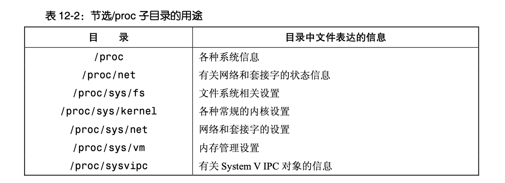
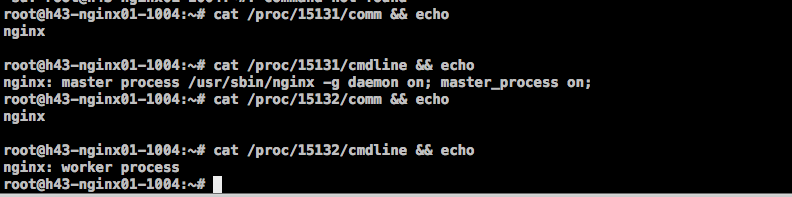
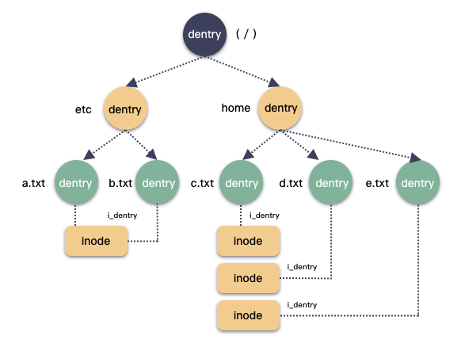
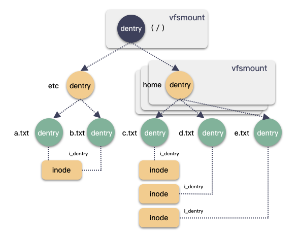

概述
- 本篇梳理各类文件系统
一 sys
- sysfs 是 Linux 下可以反应设备层次架构的一个虚拟的文件系统。他可以产生一个包括所有硬件的层级视图，也可以通过输入输出进行一些硬件操作。
- 基本上挂载在/sys 目录
基础知识
- 参考第十四章 第八篇
- 参考第五章 第八篇
- 每个
kobject对应sys文件系统下的一个目录, -
- 目录下可以直接是该 kobject 的属性（比如 name 属性, 使用 sysfs_create_files 创建)
-
- 也可以是多个属性形成的一个 group，group 是一个属性组，表现为该目录下的子目录，属性组内所有的 attr 都是文件，参考下文的 struct attribute_group 数组和 sysfs_create_group
关于内核 API 函数
- kobject_create_and_add
- sysfs_create_group
- sysfs_remove_group
Linux 下添加自己的 sysfs 接口
- 本质上是在/sys 目录下创建一些目录或者文件, 然后往这些文件进行 read、write 调用时, 自动可以执行一些内核函数. 举个例子 其实可以自己写函数获取内核信息, 从而实现监控接口.
1 添加步骤
添加步骤从需求方向来看。
1.1 注册
struct kobject *test_kobj = NULL;
int mysys_init(void)
{
...
test_kobj = kobject_create_and_add("test_sysfs", NULL);
sysfs_create_group(test_kobj, &test_sysfs_attr_group);
...
}
void mysys_exit(void)
{
...
sysfs_remove_group(test_kobj , &test_sysfs_attr_group);
kobject_put(test_kobj );
}
-
kobject_create_and_add("test_sysfs", NULL)的第一个参数是目录名称，第二个参数是父目录，NULL为空，那就会在/sys/生成目录，结果为/sys/test_sysfs。 -
如果使用父目录如
kobject_create_and_add("test_sysfs", firmware_kobj)就会在/sys/firmware/下生成目录/sys/firmware/test_sysfs。其中firmware_kobj是在drivers/base/firmware.c定义的全局变量。
firmware_kobj = kobject_create_and_add("firmware", NULL);
1.2 定义 struct attribute 和 struct attribute_group 数组
static struct attribute_group test_sysfs_attr_group= {
.name = "test_my_attr", //不写这个成员就不会创建子文件夹
.attrs = test_sysfs_attr,
};
static struct attribute *test_sysfs_attr[] = {
&test_sysfs_read.attr,
&test_sysfs_write.attr,
&test_sysfs_num1.attr,
&test_sysfs_num2.attr,
NULL,
};
这是注册使用的结构体。.name = "test_my_attr",会再创建一个子文件夹，会形成目录/sys/test_sysfs/test_my_attr。如果不需要这行不加就行了。test_sysfs_attr这个指针数组包含的内容就是包含要显示的属性的地址。此例子中为read、write、num1、num2这几个属性。
1.3 构造各个属性
static struct kobj_attribute test_sysfs_read=**ATTR(show, S_IRUSR, test_show, NULL);
static struct kobj_attribute test_sysfs_write=**ATTR(write, S_IWUSR, NULL,test_store);
static struct kobj_attribute test_sysfs_num1=**ATTR(num1, S_IRUSR, test_num1, NULL);
static struct kobj_attribute test_sysfs_num1=**ATTR(num2, S_IWUSR, NULL,test_num2);
使用 __ATTR 构造了 read、write、num1、num2 这几个属性。声明了对应的几个函数。
__ATTR 第一个参数是 显示的属性（节点）名字；
第二个参数是 节点权限；
第三个参数是 使用 cat 命令查看 sys 接口时调用的函数
第四个参数是 使用 echo 命令往 sys 接口写入内容时调用的函数
1.4 各个属性的函数编写
编写上面的几个函数。
static test_show(struct kobject *kobj, struct kobj_attribute *attr, char *buf){
...
return 1;
}
static test_store(struct kobject *kobj, struct kobj_attribute *attr, constchar *buf, size_t count){
...
return count;
}
static test_num1(struct kobject *kobj, struct kobj_attribute *attr, char *buf){
...
return 1;
}
static test_num2(struct kobject *kobj, struct kobj_attribute *attr, constchar *buf, size_t count){
...
return count;
}
这是从需求端看，实际的步骤倒着来就可以了。
2 加载后使用
加载后可以在 sys 下看到目录
/sys/test_sysfs/test_my_attr/read
/sys/test_sysfs/test_my_attr/write
/sys/test_sysfs/test_my_attr/num1
/sys/test_sysfs/test_my_attr/num2
通过调用 cat /sys/test_sysfs/test_my_attr/read 可以调用 test_show 函数；
通过调用 echo 1 > /sys/test_sysfs/test_my_attr/num2 可以调用 test_num2 函数；
利用 sysfs 操作 CPU 上线下线（热插拔）
（一） 操作 CPU 热插拔
你无需调用特殊的接口，只需要 echo 就可以在 sysfs 中通过写文件的方式将 CPU 进行热插拔：
[root@localhost ~]# echo 0 >/sys/devices/system/cpu/cpu0/online
[root@localhost ~]# echo 0 >/sys/devices/system/cpu/cpu2/online
结果就只剩 2 个 CPU 了
[root@localhost ~]# cat /proc/cpuinfo |grep processor
processor : 1
processor : 3
[root@localhost ~]#
（二） 查看已经被下线的 CPU
以上面的 CPU 热插拔为例，/sys/devices/system/cpu是一个目录，它表示系统的所有 CPU，其属性为：
cpu0 cpu1 cpu2 cpu3 cpuidle isolated kernel_max microcode modalias nohz_full offline online possible power present uevent
我们查看其 offline 属性，它表示已经下掉的 CPU，只需要读该文件即可：
[root@localhost ~]# cat /sys/devices/system/cpu/offline
0,2
二 proc
1 概览各文件作用
- /proc/cpuinfo
- /proc/meminfo
- /proc/interrupts —> 中断情况
- /proc/devices —> 内核识别的设备
- /proc/loadavg 系统负载
- /proc/uptime
- /proc/kmsg 内核的日志接口 ，rsyslogd 进程从这里读取内核打印的日志
- /proc/stat ---> 通过 top 命令看到 cpu 利用率
- /proc/diskstats ---> This file contains disk I/O statistics for each disk device.
- /proc/version 查看当前 Linux Kernel 的版本
- /proc/locks 则是保存当前由内核锁定的文件的相关信息
- /proc/filesystems 显示当前内核支持的文件系统
http://man7.org/linux/man-pages/man5/proc.5.html /proc 文件系统官方文档
2 一些总结
总体来说分为 2 类：
1 提供系统信息的查看，例如/proc,/proc/net
2 提供系统信息的设置 ,例如/proc/sys/fs /proc/sys/net /proc/sys/vm /proc/sys/kernel

3 /proc/${pid}/
- cwd==> 指向当前的工作目录
- fd ==> 指向当前打开的文件
- comm ==> 当前进程的进程名
- cmdline ==> 启动当前进程的完整的命令行
Linux 进程名和命令行的区别

- 一个是进程名，
nginx - 一个是完整命令行：
nginx: master process /usr/sbin/nginx -g daemon on; master_process on;
三 bdevfs
仅存于内核空间的伪文件系统
文件系统的精髓所在是让用户可以通过文件描述符来对指定的 inode 进行一系列的操作。
伪文件系统和普通文件系统的区别在于，其 inode 对用户不可访问，即仅在内核态可见，从用户层的视角来看该文件系统并不存在。
伪文件系统的作用是对一些操作系统中的元素进行封装，和普通的文件统一接口，如块设备bdevfs，管道文件pipefs，套接字socketfs等。
通过这种方式的统一封装，才实现了 Linux 一切皆文件的思想。
bdevfs
bdevfs对应的超级块名为blockdev_superblock，初始化工作在系统初始化时调用bdev_cache_init()完成。所有表示块设备的 inode 都保存在伪文件系统 bdevfs 中以方便块设备的管理。Linux 将块设备的 block_device 和 bdev 文件系统的块设备的 inode 通过 struct bdev_inode 进行关联。
struct super_block *blockdev_superblock __read_mostly;
static struct file_system_type bd_type = {
.name = "bdev",
.mount = bd_mount,
.kill_sb = kill_anon_super,
};
void __init bdev_cache_init(void)
{
int err;
static struct vfsmount *bd_mnt;
bdev_cachep = kmem_cache_create("bdev_cache", sizeof(struct bdev_inode),
0, (SLAB_HWCACHE_ALIGN|SLAB_RECLAIM_ACCOUNT|
SLAB_MEM_SPREAD|SLAB_ACCOUNT|SLAB_PANIC),
init_once);
err = register_filesystem(&bd_type);
if (err)
panic("Cannot register bdev pseudo-fs");
bd_mnt = kern_mount(&bd_type);
if (IS_ERR(bd_mnt))
panic("Cannot create bdev pseudo-fs");
blockdev_superblock = bd_mnt->mnt_sb; /* For writeback */
}
struct bdev_inode {
struct block_device bdev;
struct inode vfs_inode;
};
块设备剖析之关键数据结构分析 - block_device/gendisk/hd_struct
四 anon_inodefs 匿名 inode 文件系统
是什么
- 什么是匿名 inode
在 Linux 里一切皆文件，你理解的常见“文件”有什么特性？是路径，也就是 path ，匿名的意思说的就是没有路径（ 在内核里面说的就是没有有效的 dentry ）
- 来看看长什么样
我们经常在 /proc/${pid}/fd/ 下面能看到 anon_inode : 前缀的句柄，如下：
root@ubuntu:~/temp# ll /proc/5398/fd
lr-x------ 1 root root 64 Aug 24 09:39 11 -> anon_inode:inotify
lrwx------ 1 root root 64 Aug 24 09:39 4 -> anon_inode:[eventpoll]
lrwx------ 1 root root 64 Aug 24 09:39 5 -> anon_inode:[signalfd]
lrwx------ 1 root root 64 Aug 24 09:39 7 -> anon_inode:[timerfd]
lrwx------ 1 root root 64 Aug 24 09:39 9 -> anon_inode:[eventpoll]
如果是正常的文件句柄，一般显式的是一个路径：
ls -l /proc/2824114/fd
lrwx------ 1 root root 64 Jan 5 09:47 4 -> /tmp/.1.txt.swp
当然 path 只是一个浅层次的感官，因为对于 socket 句柄来说也不算有 path ，所以这个匿名其实匿的是 inode 。
为什么
在 Linux 的文件体系中，一个文件句柄，对应一个 file 结构体，关联一个 inode 。 file/dentry/inode 这三驾马车是一定要配齐的，就算是匿名的（无 path，无效 dentry），对于 file 结构体来说，一定要绑定 inode 和 dentry ，哪怕是伪造的、不完整的 inode。
anon_inodefs 就应运而生了，内核就帮你搞出来一个公共的 inode ，这就节省了所有有这样需求的内核模块，避免了内存的浪费，省了冗余重复的 inode 初始化代码。
匿名 fd 背后的是一个叫做 anon_inodefs 的内核文件系统（ 位于 fs/anon_inodes.c ），这个文件系统极其简单，整个文件系统只有一个 inode ，这个 inode 是文件系统初始化的时候创建好的。之后，所有需要一个匿名 inode 的句柄都直接跟这个 inode 关联即可。
怎么办
1 anon_inodefs 的初始化
上面提到了，匿名 inode 是一个公共需求，我们不需要一个完整功能的 inode，而只是需要一个 inode 而已，绑定到 dentry ，file 等结构体。
anon_inodes.c 用来创建一个绑定匿名 inode 的 file 结构体。
整个 anon_inodefs 就只有一个文件，操作系统初始化的时候会调用初始化函数 fs_initcall(anon_inode_init) ，其中 anon_inode_init 只做两件事：
- 创建出一个 vfsmount 实例，创建出来之后赋值给全局变量 anon_inode_mnt ；
- 创建出一个 inode 实例，创建出来之后赋值给全局变量 anon_inode_inode ；
这两个变量就是 anon_inodefs 这个文件系统的全部家当了。
- 源码如下:
fs/anod_inodes.c:
static int __init anon_inode_init(void)
{
anon_inode_mnt = kern_mount(&anon_inode_fs_type);
if (IS_ERR(anon_inode_mnt))
panic("anon_inode_init() kernel mount failed (%ld)\n", PTR_ERR(anon_inode_mnt));
anon_inode_inode = alloc_anon_inode(anon_inode_mnt->mnt_sb);
if (IS_ERR(anon_inode_inode))
panic("anon_inode_init() inode allocation failed (%ld)\n", PTR_ERR(anon_inode_inode));
return 0;
}
fs_initcall(anon_inode_init);
2 anon_inodefs 对外提供的接口
anon_inodefs 只提供了 2 个实用函数，一个获取到一个绑定匿名 inode 的 file 实例，另一个更多一些封装，返回的是 fd 句柄（整数）。如下：
2.1 anon_inode_getfile
这个函数非常简单，只做两件事：
- 获取一个 inode （ 获取全局的 inode 变量 anon_inode_inode ，当然也可以通过一个参数控制来创建新的 inode ）；
- 创建一个 file 结构体实例，并且把这个 inode 关联起来；
返回 struct file 实例
2.2 anon_inode_getfd
这个函数非常简单，只做两件事情：
- 创建一个新的 fd 句柄，返回的是一个非负整数；
- 创建一个 file 实例（ 调用的是 anon_inode_getfile 来获取 ），然后把这个 fd 和 file 关联起来；
返回 struct file 实例对应到当前 task_struct 的文件句柄（一个正整数）
这两个函数就是 anon_inodefs 提供的两个对外的函数接口。获取到一个 file 实例，这个实例绑定到 anon_inodefs 公共的 inode 实例。
关于 anon_inodefs 的功能，其实在函数的注释中也提到了，太直白了，如下：
// anon_inode_getfile 和 anon_inode_getfd 的注释明确提到了 anon_inodefs 的两个目的：
// - 节省内存
// - 封装公共的冗余代码
* Creates a new file by hooking it on a single inode. This is
* useful for files that do not need to have a full-fledged inode in
* order to operate correctly. All the files created with
* anon_inode_getfd() will use the same singleton inode, reducing
* memory use and avoiding code duplication for the file/inode/dentry
* setup. Returns a newly created file descriptor or an error code.
3 dentry 名字为啥叫“anon_inode:${dentry_name}” ?
还是得看源码
为什么常见的匿名 fd 都有以 “anon_inode:” 这样开头？
其实这种看得到的字符串都是 path ，这个是和 dentry 对应起来的，对于这种匿名 inode 的 dentry ，有着统一的名字：
// dentry 的操作表
static const struct dentry_operations anon_inodefs_dentry_operations = {
.d_dname = anon_inodefs_dname,
};
// 操作表 .d_dname 方法的定制实现
static char *anon_inodefs_dname(struct dentry *dentry, char *buffer, int buflen)
{
return dynamic_dname(dentry, buffer, buflen, "anon_inode:%s", dentry->d_name.name);
}
那么 dentry->d_name.name 又是怎么赋值的呢？我以 epoll fd 来举个例子：
// epoll_create 函数入口 ( fs/eventpoll.c )
static int do_epoll_create(int flags)
{
// 创建匿名句柄 ...
file = anon_inode_getfile("[eventpoll]", &eventpoll_fops, ep, O_RDWR | (flags & O_CLOEXEC));
}
传入的 name 是"[eventpoll]",所以"anon_inode:%s"最终组合起来就是"anon_inode:[eventpoll]"
4 谁用到了匿名 inode
- 随便列举一些 eventfd，eventpoll，timerfd，signalfd，inotifyfd，io_uring fd 等等，还有很多
5 Linux 目录树和内核 dentry 树
在 Linux 中是一个倒挂树的设计，从根目录（ / ）开始，叶子结点为文件或者目录，从根节点到叶子结点这一段就称为 path 路径，在内存里面这颗倒挂的树就体现为 dentry 树，节点就是 dentry 结构体。
这里就有个重要的知识点：
划重点：一个 inode 上可以挂多个 dentry ，一个 dentry 只能属于一个 inode 。

可以看到/etc/a.txt 和 /etc/b.txt 互为硬链接
每个文件或者目录都会在这棵树上有自己的位置，内核用 struct path 结构体来表示唯一的位置。
struct path {
struct vfsmount *mnt; // 标识在哪个具体的文件系统实例
struct dentry *dentry; // 内存目录树节点
};
这里顺便再说另一个重要知识点：为什么内核之中，需要用 struct path 这个复合结构体来标识唯一的一个目录树位置呢？
其实所谓的挂载是把文件系统实例和目录树上的一个 dentry 关联起来，形成一个 vfsmount 结构体实例。而一个 dentry 是可以绑定多个文件系统实例的。
- 文件系统实例是指 super_block 吗？应该不对，应该是一个 vfsmount 实例
struct vfsmount {
struct dentry *mnt_root; /* root of the mounted tree */ //指向挂载文件系统根目录项dentry实例
struct super_block *mnt_sb; /* pointer to superblock */ //指向文件系统超级块实例
int mnt_flags; //内核内部使用的挂载标记
struct user_namespace *mnt_userns;
};
- mount 源码是怎样的，参考Linux 内核—文件系统 mount 过程
换句话说：对于一个目录树路径其实是可以挂载多个文件系统实例。比如 /mnt/path 这么一个路径，其实是可以挂载多个文件系统的，不会报错，后面的挂载直接覆盖前面的。

timerfd
timerfd 是什么
- timerfd 是一个时间相关的 fd，当 timerfd 初始化时，可以设置一个超时时间，超时之后，该句柄可读，读出来的是超时的次数。
timerfd 基本使用
timerfd 相关的系统调用有 3 个：
// 创建一个 timerfd 句柄
int timerfd_create(int clockid, int flags);
// 启动或关闭 timerfd 对应的定时器
int timerfd_settime(int fd, int flags, const struct itimerspec *new_value, struct itimerspec *old_value);
// 获取指定 timerfd 距离下一次超时还剩的时间
int timerfd_gettime(int fd, struct itimerspec *curr_value);
timerfd 常与 epoll 系统调用结合使用：
// 创建一个 timerfd 句柄
int fdTimer = timerfd_create(CLOCK_MONOTONIC, 0 /*flags*/);
itimerspec timespec {
// 设置超时间隔
.it_interval = {
.tv_sec = 5,
.tv_nsec = 0,
},
//第一次超时时间
.it_value = {
.tv_sec = 5,
.tv_nsec = 0,
},
};
//启动定时器
int timeRes = timerfd_settime(fdTimer, 0 /*flags*/, ×pec, nullptr);
// epoll 监听 timerfd
epoll_ctl(mEpollFd, EPOLL_CTL_Add, fdTimer, &eventItem);
while (true)
{
// 进入休眠状态
epoll_wait(mEpollFd, eventItems, EPOLL_MAX_EVENTS, timeoutMillis);
if (count < 0)
{
perror("epoll failed");
break;
}
for (int i=0;i < count;i++)
{
//处理计时器到达事件
}
}
五 socketfs
其他文件系统
tmpfs
devtmpfs
- devtmpfs 的功用是在 Linux 核心 启动早期建立一个初步的 /dev，令一般启动程序不用等待 udev，缩短 GNU/Linux 的开机时间。
debugfs
- 在内核追踪技术的发展初期，追踪相关的文件都放在 debugfs 虚拟文件系统中，debugfs 主要设计目的是为了提供一个通用的内核调试接口，内核的任意子系统都有可能使用 debugfs 做调试.
socketfs
pipefs
ramfs
btrfs
autofs